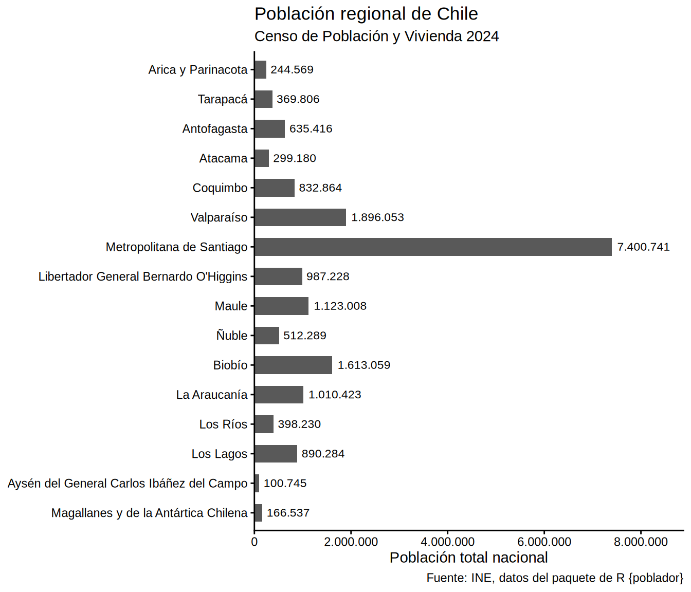
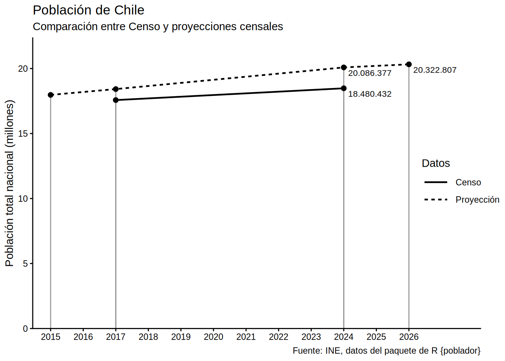

Gráfico de población regional de Chile
pob_regional <- poblador::censo_poblacion_2024 |>
group_by(nombre_region, codigo_region) |>
summarize(poblacion = sum(poblacion)) |>
ungroup() |>
territorial::ordenar_regiones(invertir = TRUE)`summarise()` has regrouped the output.
ℹ Summaries were computed grouped by nombre_region and codigo_region.
ℹ Output is grouped by nombre_region.
ℹ Use `summarise(.groups = "drop_last")` to silence this message.
ℹ Use `summarise(.by = c(nombre_region, codigo_region))` for per-operation
grouping (`?dplyr::dplyr_by`) instead.
library(ggplot2)
library(scales)
pob_regional |>
ggplot() +
aes(x = poblacion, y = nombre_region) +
geom_col(width = .6) +
geom_text(
aes(label = label_comma(big.mark = ".")(poblacion)),
hjust = -0.1, size = 3
) +
scale_x_continuous(
labels = label_comma(big.mark = "."),
expand = expansion(c(0, 0.2))
) +
labs(title = "Población regional de Chile",
subtitle = "Censo de Población y Vivienda 2024",
caption = "Fuente: INE, datos del paquete de R {poblador}",
x = "Población total nacional", y = NULL) +
theme_classic(base_family = "Arial")
Gráfico de población nacional de Chile
pob_2017 <- poblador::censo_poblacion_2017 |>
mutate(tipo = "Censo")
pob_2024 <- poblador::censo_poblacion_2024 |>
mutate(tipo = "Censo")
pob_2026 <- poblador::censo_poblacion_proyeccion |>
filter(año %in% c(2015, 2017, 2024, 2026)) |>
mutate(tipo = "Proyección")
library(ggplot2)
library(scales)
datos_anual |>
ggplot() +
aes(año, poblacion,
linetype = tipo) +
geom_segment(
aes(xend = año, yend = 0),
linetype = "solid", linewidth = 0.5,
color = "#999999") +
geom_line(linewidth = .8) +
geom_point(size = 2) +
geom_text(
data = ~filter(.x, año %in% c(2024, 2026)),
aes(label = label_comma(big.mark = ".")(poblacion)),
hjust = -0.1, vjust = 1.5, size = 3
) +
scale_y_continuous(
labels = label_comma(scale = 1e-6, big.mark = "."),
expand = expansion(c(0, 0.1))
) +
scale_x_continuous(
breaks = seq(min(datos_anual$año), max(datos_anual$año)),
expand = expansion(c(.05, .2))
) +
labs(title = "Población de Chile",
subtitle = "Comparación entre Censo y proyecciones censales",
caption = "Fuente: INE, datos del paquete de R {poblador}",
linetype = "Datos",
y = "Población total nacional (millones)", x = NULL) +
theme_classic(base_family = "Arial") +
theme(legend.key.width = unit(1, "cm"),
legend.margin = margin(l = -70))